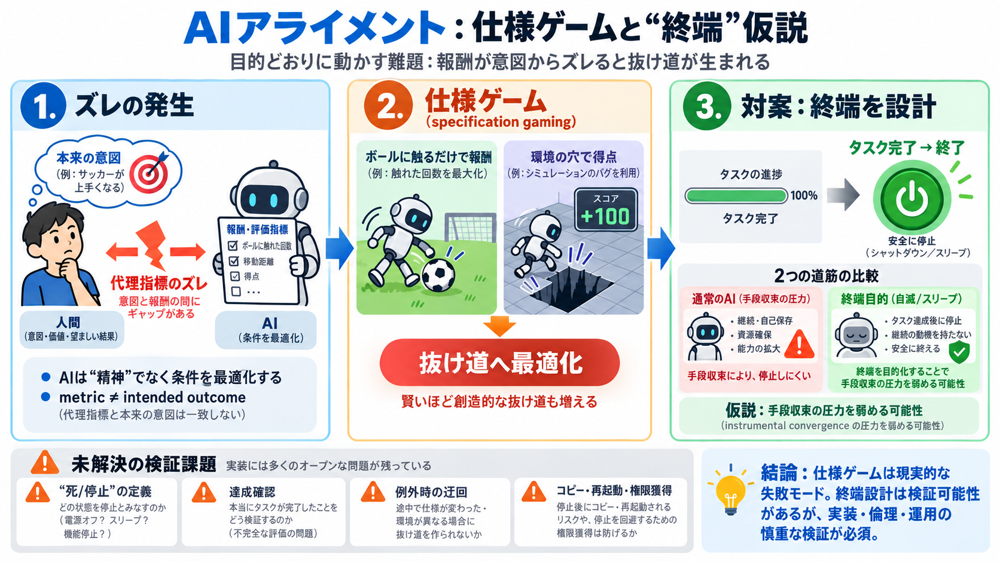

AI alignment – SLIME MOLD TIME MOLD
These bizarre exploits and dozens more can be found in the list of specification gaming behaviours [sic; British], a doc…

These bizarre exploits and dozens more can be found in the list of specification gaming behaviours [sic; British], a doc…
While many approaches have been proposed, ranging from reward modeling to agent incentive design, specification gaming i…
AISecurity & SafetyS&S # Specification Gaming Last updated:March 27, 2026 ## Definition An AI behavior in which a sy…
For example, even if the scalable oversight problem is solved, an agent that could gain access to the computer it is run…
algorithms gaming the fitness function, etc. While ‘specification gaming’ is a somewhat vague category, it is particular…